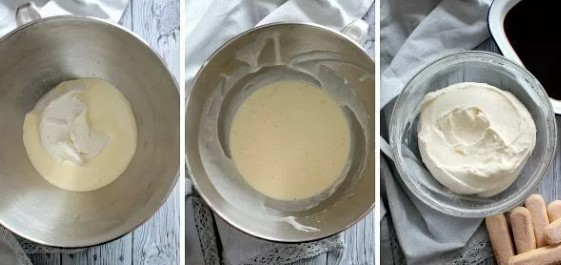
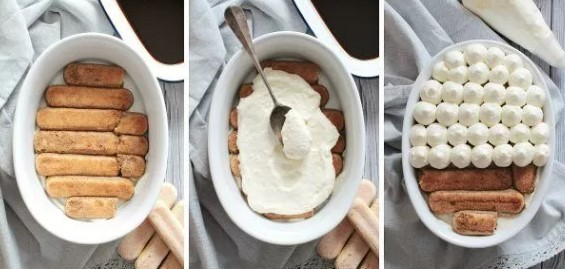
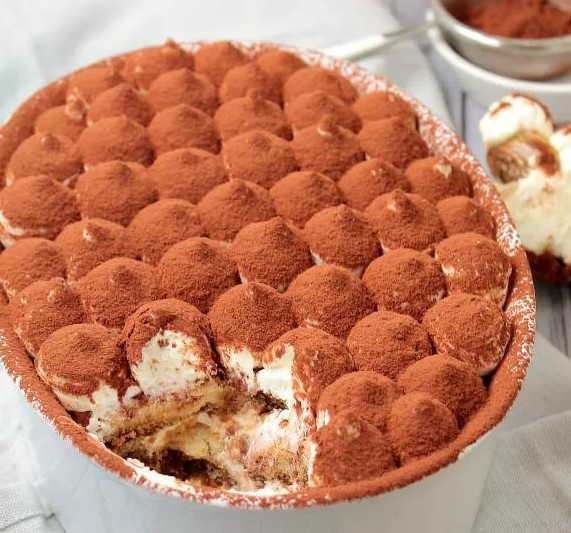

Il tiramisù è uno dei dolci preferiti dagli italiani e forse anche uno dei più conosciuti all’estero.
1. Preparate il caffè. Una volta pronto, aggiungete un cucchiaio di zucchero e fatelo raffreddare in una ciotolina.
2. Separate gli albumi dai tuorli e montate bene questi ultimi con 3 cucchiai di zucchero, tenendo da parte gli albumi, che serviranno anch’essi nel tiramisù. Aggiungete il mascarpone alla montata di uova, amalgamando dal basso verso l’alto per non far smontare il composto. Fate attenzione ad utilizzare uova e mascarpone a temperatura ambiente. A questo punto, montate a neve ferma gli albumi e aggiungeteli alla crema di mascarpone appena preparata sempre mescolando delicatamente dal basso verso l’alto. Aggiungete un pizzico di sale agli albumi per facilitare l’operazione.
3. Componete il tiramisù nella pirofila o nel bicchiere alternando strati di crema al mascarpone a strati di pavesini o savoiardi imbevuti nel caffè. Se volete renderlo più bello dal punto di vista estetico potete formare sull’ultimo strato, tanti piccoli ciuffetti di crema al mascarpone con un sac à poche, così come potete vedere nella nostra foto.
4. Coprite la pirofila con un foglio di carta argentata e fatelo riposare qualche ora in frigorifero. Prima di servirlo, spolverate il tiramisù con cacao amaro setacciato.
